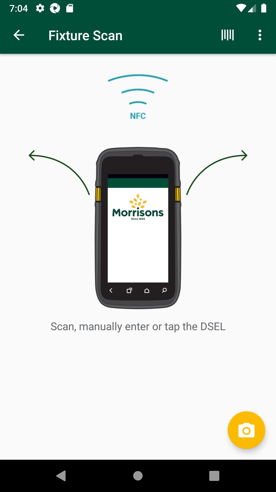
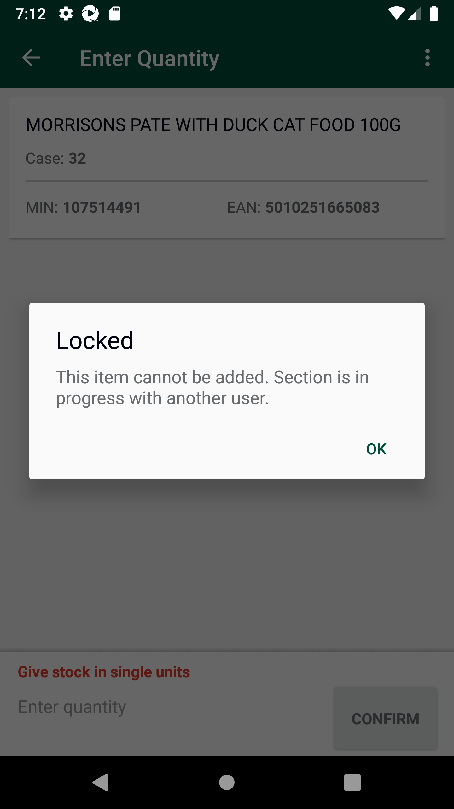
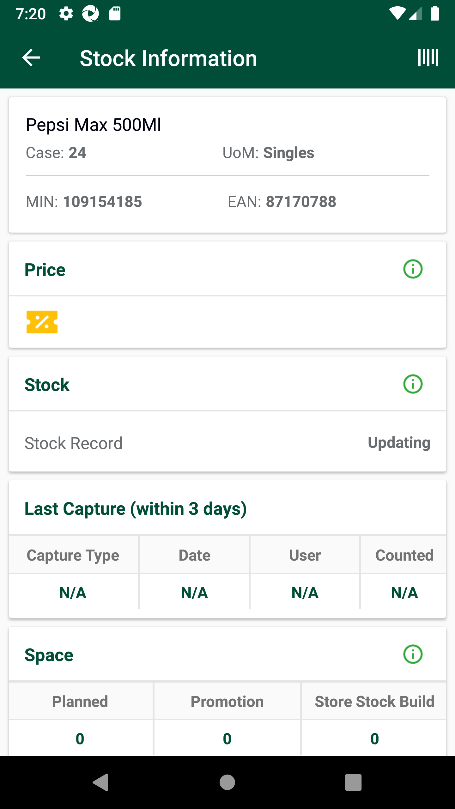
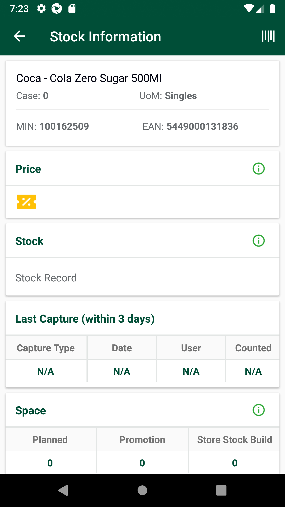
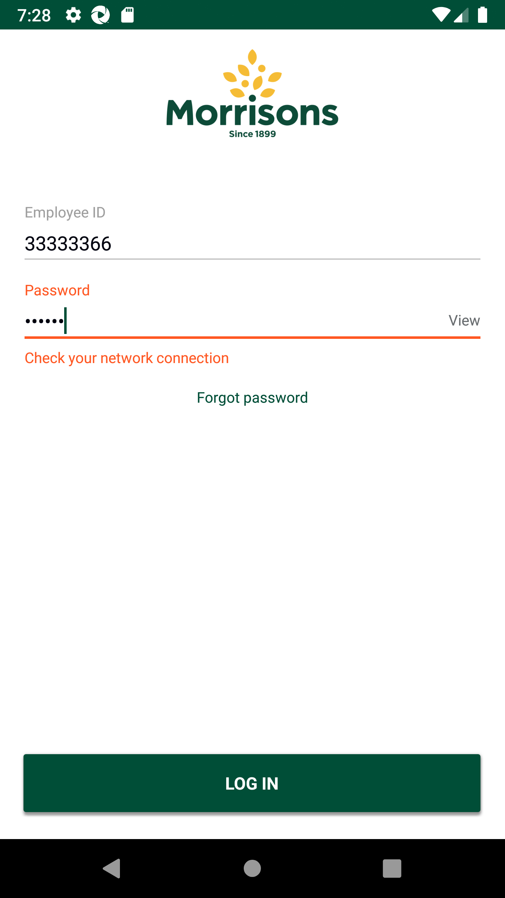
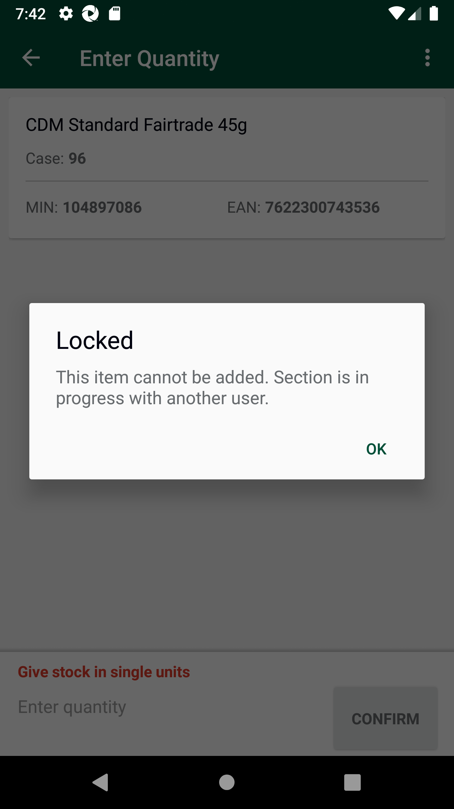
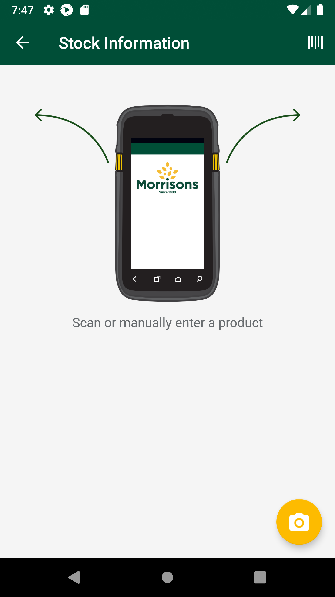

-
Verify AM GLH Functionality
15:02:24 PM / 25:31:459 Fail
Verify AM GLH Functionality
05.24.2023 15:02:24 05.24.2023 15:57:55 25:31:459 · #test-id=1@store_walk @regression @NewAm_glh1_701PassTO CHANGE THE DEVICE TIMINGS AS REQUIREDPassTO CHANGE THE DEVICE TIMINGS AS REQUIREDGiven I send the time "07" and mins "00" and meridiem "am" and current date in listThen I Change timeThen I Change datePassTO CHANGE THE DEVICE TIMINGS AS REQUIREDGiven I send the time "03" and mins "00" and meridiem "pm" and current date in listThen I Change timeThen I Change datePassTC-01_Verify UI of Gaps, Low, Highs is displayed as expected or notWhen I enter Username and Password for SMA Collegue userAnd I click on login button for SMAThen I click on 'stockMngmtText' on page 'HomePagePO_New'Then I click on "Gaps, Lows, Highs"Then I click on Fixture ScanAnd I click on Back ButtonThen I click on OffShelfAnd I click on Back ButtonThen I click on PetrolAnd I click on Back ButtonThen I click on WareHouseAnd I click on Back ButtonThen I click on ReviewAnd I click on Back ButtonThen I click on SummaryAnd I click on Back ButtonPassDelete GLH Storewalk from ServicePassDelete GLH Storewalk from ServiceGiven Request is made to SMA app login service for collegue userThen Service should return details for SMA app Login ServiceAnd Get the generated Access Tocken for SMA app Login ServiceGiven Get request is made to Get storewalks service for current dateAnd Get Operation perform on service requestThen Verify Get storewalks service response for current dateThen Delete request is made to Delete GLH storewalk for store id "8"FailTC_02_16131_Scan product as Gap in fixture scan and verify records are present in warehouse. Delete product from fixture and verify records are not present in warehouse.FailTC_02_16131_Scan product as Gap in fixture scan and verify records are present in warehouse. Delete product from fixture and verify records are not present in warehouse.When I enter Username and Password for SMA Collegue userAnd I click on login button for SMAThen I click on 'stockMngmtText' on page 'HomePagePO_New'Then I click on "Gaps, Lows, Highs"Then I click on Fixture ScanAnd I click on barcode entry ButtonThen Enter "107514491" numberAnd I click on GAP buttonAnd I choose the plan from popup if multiple records presentThen I verify the if it is GAPAnd I click on Back ButtonThen I click on WareHouseThen I verify my min is present in the "Household & Pet Food"And I click on Back ButtonGiven Request is made to SMA app login service for collegue userThen Service should return details for SMA app Login ServiceAnd Get the generated Access Tocken for SMA app Login ServiceGiven Get request is made to Get storewalks service for current dateAnd Get Operation perform on service requestThen I verify Product id "107514491" for Store id "8" and Walk type "GapsHighsLows" is present in Get storewalk serviceThen I verify Section status is "Available" in Get storewalk serviceThen I click on Fixture ScanThen I click on ViewList of GapsLowHighcom.morrisons.common.action.Hook.afterScenario(io.cucumber.java.Scenario)
And I Delete products from fixtureStep skippedAnd I click on Back ButtonStep skippedAnd I click on Back ButtonStep skippedThen I click on WareHouseStep skippedThen I verify that record is deleted from WareHouseStep skippedFailTC_03_16131_Scan product as High in fixture scan and verify records are present in warehouse. Delete product from fixture and verify records are not present in warehouse.FailTC_03_16131_Scan product as High in fixture scan and verify records are present in warehouse. Delete product from fixture and verify records are not present in warehouse.When I enter Username and Password for SMA Collegue userAnd I click on login button for SMAThen I click on 'stockMngmtText' on page 'HomePagePO_New'Then I click on "Gaps, Lows, Highs"Then I click on Fixture ScanAnd I click on barcode entry ButtonThen Enter "100162509" numberAnd I click on High buttonAnd I enter quantity "2" for fixture and warehouseAnd I choose the plan from popup if multiple records presentThen I verify the if it is HIGHAnd I click on Back ButtonThen I click on WareHouseThen I verify my min is present in the "Grocery (Impulse)"Given Request is made to SMA app login service for collegue userThen Service should return details for SMA app Login ServiceAnd Get the generated Access Tocken for SMA app Login ServiceGiven Get request is made to Get storewalks service for current dateAnd Get Operation perform on service requestThen I verify Product id "100162509" for Store id "8" and Walk type "GapsHighsLows" is present in Get storewalk serviceThen I verify Capture details in storewalk for Product id "100162509" is Capture type "High" Capture status "Incomplete" and Capture quantity "2"Then I verify Section status is "Available" in Get storewalk serviceAnd I click on Back ButtonThen I click on Fixture ScanThen I click on ViewList of GapsLowHighcom.morrisons.common.action.Hook.afterScenario(io.cucumber.java.Scenario)And I Delete products from fixtureStep skippedAnd I click on Back ButtonStep skippedAnd I click on Back ButtonStep skippedThen I click on WareHouseStep skippedThen I verify that record is deleted from WareHouseStep skippedFailTC_04_16131_Scan product as Low in fixture scan and verify records are present in warehouse. Delete product from fixture and verify records are not present in warehouse.FailTC_04_16131_Scan product as Low in fixture scan and verify records are present in warehouse. Delete product from fixture and verify records are not present in warehouse.When I enter Username and Password for SMA Collegue userAnd I click on login button for SMAThen I click on 'stockMngmtText' on page 'HomePagePO_New'Then I click on "Gaps, Lows, Highs"Then I click on Fixture ScanAnd I click on barcode entry ButtonThen Enter "101533092" numberAnd I click on Low buttonAnd I Enter the Low quantity "2"And I choose the plan from popup if multiple records presentThen I verify the if it is LOWAnd I click on Back ButtonThen I click on WareHouseThen I verify my min is present in the "Alcohol"Given Request is made to SMA app login service for collegue userThen Service should return details for SMA app Login ServiceAnd Get the generated Access Tocken for SMA app Login ServiceGiven Get request is made to Get storewalks service for current dateAnd Get Operation perform on service requestThen I verify Product id "101533092" for Store id "8" and Walk type "GapsHighsLows" is present in Get storewalk serviceThen I verify Capture details in storewalk for Product id "101533092" is Capture type "Low" Capture status "Incomplete" and Capture quantity "2"Then I verify Section status is "Available" in Get storewalk serviceAnd I click on Back ButtonThen I click on Fixture ScanThen I click on ViewList of GapsLowHighcom.morrisons.common.action.Hook.afterScenario(io.cucumber.java.Scenario)And I Delete products from fixtureStep skippedAnd I click on Back ButtonStep skippedAnd I click on Back ButtonStep skippedThen I click on WareHouseStep skippedThen I verify that record is deleted from WareHouseStep skippedFailTC_05_16132_Scan a product as LOW. Update variance count in warehouse. Verify variance count is updated.FailTC_05_16132_Scan a product as LOW. Update variance count in warehouse. Verify variance count is updated.When I enter Username and Password for SMA Collegue userAnd I click on login button for SMAGiven Request is made to SMA app login service for collegue userThen Service should return details for SMA app Login ServiceAnd Get the generated Access Tocken for SMA app Login ServiceGiven Get request is made to Get storewalks service for current dateAnd Get Operation perform on service requestThen Verify Get storewalks service response for current dateThen Delete request is made to Delete GLH storewalk for store id "8"Then I click on 'stockMngmtText' on page 'HomePagePO_New'Then I click on "Gaps, Lows, Highs"Then I click on Fixture ScanAnd I click on barcode entry ButtonThen Enter "107514491" numberThen I capture StockRecord ValueAnd I click on Low buttonAnd I Enter the Low quantity "2"And I choose the plan from popup if multiple records presentAnd I will capture the product name from view listThen I verify the product MIN value "107514491" from view listThen I verify the if it is LOWAnd I click on Back ButtonThen I click on WareHouseThen I verify my min is present in the "Household & Pet Food" or notThen I verify the if Low is displayed in warehouseThen I Verify that Barcode matches with the input "107514491" barcodeAnd I get the variance count previous valueThen I verify the Item DescriptionThen I enter Qty in Warehouse "3"com.morrisons.common.action.Hook.afterScenario(io.cucumber.java.Scenario)
And I verify the variance count after adding quantity "3" valueStep skippedAnd I click on Back ButtonStep skippedGiven Request is made to SMA app login service for collegue userStep skippedThen Service should return details for SMA app Login ServiceStep skippedAnd Get the generated Access Tocken for SMA app Login ServiceStep skippedGiven Get request is made to Get storewalks service for current dateStep skippedAnd Get Operation perform on service requestStep skippedThen I verify Product id "107514491" for Store id "8" and Walk type "GapsHighsLows" is present in Get storewalk serviceStep skippedThen I verify Capture details in storewalk for Product id "107514491" is Capture type "Low" Capture status "Incomplete" and Capture quantity "2"Step skippedThen I verify Capture details in storewalk for Product id "107514491" is Capture type "Actual" Capture status "Incomplete" and Capture quantity "3"Step skippedThen I verify Section status is "Available" in Get storewalk serviceStep skippedAnd I click on Back ButtonStep skippedThen I click on Fixture ScanStep skippedThen I click on ViewList of GapsLowHighStep skippedAnd I Delete products from fixtureStep skippedPassTC_06_16133_Verify if product is marked as HIGH, then in view list two entries should be present.PassTC_06_16133_Verify if product is marked as HIGH, then in view list two entries should be present.When I enter Username and Password for SMA Collegue userAnd I click on login button for SMAGiven Request is made to SMA app login service for collegue userThen Service should return details for SMA app Login ServiceAnd Get the generated Access Tocken for SMA app Login ServiceGiven Get request is made to Get storewalks service for current dateAnd Get Operation perform on service requestThen Verify Get storewalks service response for current dateThen Delete request is made to Delete GLH storewalk for store id "8"Then I click on 'stockMngmtText' on page 'HomePagePO_New'Then I click on "Gaps, Lows, Highs"Then I click on Fixture ScanAnd I click on barcode entry ButtonThen Enter "107514491" numberAnd I click on High buttonAnd I enter quantity "2" for fixture and warehouseAnd I choose the plan from popup if multiple records presentThen I verify the if it is HIGHAnd I will capture the product name from view listThen I verify the product MIN value "107514491" from view listAnd I click on ViewList to verify that two entries are present for MIN "107514491"And I Delete products from fixturePassTC_07_Verify that GAP is properly generated in Fixture Scan and view list GAP status, Product name and Product min value should displayed.To verify Last capture section displaying correct information when the last capture has been taken in AM GLH and scanned as GAP.PassTC_07_Verify that GAP is properly generated in Fixture Scan and view list GAP status, Product name and Product min value should displayed.To verify Last capture section displaying correct information when the last capture has been taken in AM GLH and scanned as GAP.When I enter Username and Password for SMA Collegue userAnd I click on login button for SMAGiven Request is made to SMA app login service for collegue userThen Service should return details for SMA app Login ServiceAnd Get the generated Access Tocken for SMA app Login ServiceGiven Get request is made to Get storewalks service for current dateAnd Get Operation perform on service requestThen Verify Get storewalks service response for current dateThen Delete request is made to Delete GLH storewalk for store id "8"Then I click on 'stockMngmtText' on page 'HomePagePO_New'Then I click on "Gaps, Lows, Highs"Then I click on Fixture ScanAnd I click on barcode entry ButtonThen Enter "110440154" numberAnd I click on GAP buttonAnd I choose the plan from popup if multiple records presentAnd I will capture the product name from view listThen I verify the product MIN value "110440154" from view listThen I verify the if it is GAPAnd I click on Back ButtonThen I click on WareHouseThen I verify my min is present in the "Grocery (Impulse)"And I click on Back ButtonThen I click on hotKeyAnd I select StockInformation from the Hotkey MenuAnd I click on barcode entry ButtonThen Enter "110440154" numberAnd I verify Last Capture Type is "AM Gap"And I verify Date and User details for Last captureAnd I verify Counted column and counted quantity "0" for last capture are presentAnd I click on Back ButtonAnd I click on Back ButtonFailTC_08_Verify that LOW is properly generated in Fixture Scan and view list LOW status, Product name and Product min value should displayed.To verify Last capture section displaying correct information when the last capture has been taken in Low and scanned as LOW.FailTC_08_Verify that LOW is properly generated in Fixture Scan and view list LOW status, Product name and Product min value should displayed.To verify Last capture section displaying correct information when the last capture has been taken in Low and scanned as LOW.When I enter Username and Password for SMA Collegue userAnd I click on login button for SMAThen I click on 'stockMngmtText' on page 'HomePagePO_New'Then I click on "Gaps, Lows, Highs"Then I click on Fixture ScanAnd I click on barcode entry ButtonThen Enter "109154185" numberAnd I click on Low buttonAnd I Enter the Low quantity "2"And I choose the plan from popup if multiple records presentAnd I will capture the product name from view listThen I verify the product MIN value "109154185" from view listThen I verify the if it is LOWAnd I verfify "109154185" item is presentAnd I click on Back ButtonThen I click on hotKeyAnd I select StockInformation from the Hotkey MenuAnd I click on barcode entry ButtonThen Enter "109154185" numberAnd I verify Last Capture Type is "Low"com.morrisons.common.action.Hook.afterScenario(io.cucumber.java.Scenario)
And I verify Date and User details for Last captureStep skippedAnd I verify Counted column and counted quantity "2" for last capture are presentStep skippedAnd I click on Back ButtonStep skippedAnd I click on Back ButtonStep skippedFailTC_08_Verify that LOW is properly generated in Fixture Scan and view list LOW status, Product name and Product min value should displayed.To verify Last capture section displaying correct information when the last capture has been taken in Low and scanned as LOW.When I enter Username and Password for SMA Collegue userAnd I click on login button for SMAThen I click on 'stockMngmtText' on page 'HomePagePO_New'Then I click on "Gaps, Lows, Highs"Then I click on Fixture ScanAnd I click on barcode entry ButtonThen Enter "100162509" numberAnd I click on Low buttonAnd I Enter the Low quantity "4"And I choose the plan from popup if multiple records presentAnd I will capture the product name from view listThen I verify the product MIN value "100162509" from view listThen I verify the if it is LOWAnd I verfify "100162509" item is presentAnd I click on Back ButtonThen I click on hotKeyAnd I select StockInformation from the Hotkey MenuAnd I click on barcode entry ButtonThen Enter "100162509" numberAnd I verify Last Capture Type is "Low"com.morrisons.common.action.Hook.afterScenario(io.cucumber.java.Scenario)
And I verify Date and User details for Last captureStep skippedAnd I verify Counted column and counted quantity "4" for last capture are presentStep skippedAnd I click on Back ButtonStep skippedAnd I click on Back ButtonStep skippedPassTC_08_Verify that LOW is properly generated in Fixture Scan and view list LOW status, Product name and Product min value should displayed.To verify Last capture section displaying correct information when the last capture has been taken in Low and scanned as LOW.When I enter Username and Password for SMA Collegue userAnd I click on login button for SMAThen I click on 'stockMngmtText' on page 'HomePagePO_New'Then I click on "Gaps, Lows, Highs"Then I click on Fixture ScanAnd I click on barcode entry ButtonThen Enter "107742952" numberAnd I click on Low buttonAnd I Enter the Low quantity "4"And I choose the plan from popup if multiple records presentAnd I will capture the product name from view listThen I verify the product MIN value "107742952" from view listThen I verify the if it is LOWAnd I verfify "107742952" item is presentAnd I click on Back ButtonThen I click on hotKeyAnd I select StockInformation from the Hotkey MenuAnd I click on barcode entry ButtonThen Enter "107742952" numberAnd I verify Last Capture Type is "Low"And I verify Date and User details for Last captureAnd I verify Counted column and counted quantity "4" for last capture are presentAnd I click on Back ButtonAnd I click on Back ButtonFailTC_09_Verify that High is properly generated in Fixture Scan and view list HIGH status, Product name and Product min value should displayed. To verify Last capture section displaying correct information when the last capture has been taken in High and scanned as HIGH.FailTC_09_Verify that High is properly generated in Fixture Scan and view list HIGH status, Product name and Product min value should displayed. To verify Last capture section displaying correct information when the last capture has been taken in High and scanned as HIGH.Given Request is made to SMA app login service for collegue userThen Service should return details for SMA app Login ServiceAnd Get the generated Access Tocken for SMA app Login ServiceGiven Get request is made to Get storewalks service for current dateAnd Get Operation perform on service requestThen Verify Get storewalks service response for current dateThen Delete request is made to Delete GLH storewalk for store id "8"When I enter Username and Password for SMA Collegue userAnd I click on login button for SMAThen I click on 'stockMngmtText' on page 'HomePagePO_New'com.morrisons.common.action.Hook.afterScenario(io.cucumber.java.Scenario)
Then I click on "Gaps, Lows, Highs"Step skippedThen I click on Fixture ScanStep skippedAnd I click on barcode entry ButtonStep skippedThen Enter "100162509" numberStep skippedAnd I click on High buttonStep skippedAnd I enter quantity "2" for fixture and warehouseStep skippedAnd I choose the plan from popup if multiple records presentStep skippedAnd I click on OKStep skippedAnd I will capture the product name from view listStep skippedThen I verify the product MIN value "100162509" from view listStep skippedThen I verify the if it is HIGHStep skippedAnd I click on Back ButtonStep skippedThen I click on hotKeyStep skippedAnd I select StockInformation from the Hotkey MenuStep skippedAnd I click on barcode entry ButtonStep skippedThen Enter "100162509" numberStep skippedAnd I verify Last Capture Type is "High"Step skippedAnd I verify Date and User details for Last captureStep skippedAnd I verify Counted column and counted quantity "4" for last capture are presentStep skippedAnd I click on Back ButtonStep skippedAnd I click on Back ButtonStep skippedPassTC_09_Verify that High is properly generated in Fixture Scan and view list HIGH status, Product name and Product min value should displayed. To verify Last capture section displaying correct information when the last capture has been taken in High and scanned as HIGH.Given Request is made to SMA app login service for collegue userThen Service should return details for SMA app Login ServiceAnd Get the generated Access Tocken for SMA app Login ServiceGiven Get request is made to Get storewalks service for current dateAnd Get Operation perform on service requestThen Verify Get storewalks service response for current dateThen Delete request is made to Delete GLH storewalk for store id "8"When I enter Username and Password for SMA Collegue userAnd I click on login button for SMAThen I click on 'stockMngmtText' on page 'HomePagePO_New'Then I click on "Gaps, Lows, Highs"Then I click on Fixture ScanAnd I click on barcode entry ButtonThen Enter "110440154" numberAnd I click on High buttonAnd I enter quantity "4" for fixture and warehouseAnd I choose the plan from popup if multiple records presentAnd I click on OKAnd I will capture the product name from view listThen I verify the product MIN value "110440154" from view listThen I verify the if it is HIGHAnd I click on Back ButtonThen I click on hotKeyAnd I select StockInformation from the Hotkey MenuAnd I click on barcode entry ButtonThen Enter "110440154" numberAnd I verify Last Capture Type is "High"And I verify Date and User details for Last captureAnd I verify Counted column and counted quantity "8" for last capture are presentAnd I click on Back ButtonAnd I click on Back ButtonPassFirst scan in GLH as LOW then as HIGH/GAP , captured should override with latest Capture details in Stock information screenPassFirst scan in GLH as LOW then as HIGH/GAP , captured should override with latest Capture details in Stock information screenWhen I enter Username and Password for SMA Collegue userAnd I click on login button for SMAThen I click on 'stockMngmtText' on page 'HomePagePO_New'Then I click on "Gaps, Lows, Highs"Then I click on Fixture ScanAnd I click on barcode entry ButtonThen Enter "109154185" numberAnd I click on Low buttonAnd I Enter the Low quantity "2"And I choose the plan from popup if multiple records presentAnd I will capture the product name from view listThen I verify the product MIN value "109154185" from view listThen I verify the if it is LOWAnd I verfify "109154185" item is presentAnd I click on Back ButtonThen I click on hotKeyAnd I select StockInformation from the Hotkey MenuAnd I click on barcode entry ButtonThen Enter "109154185" numberAnd I verify Last Capture Type is "Low"And I verify Date and User details for Last captureAnd I verify Counted column and counted quantity "2" for last capture are presentAnd I click on Back ButtonAnd I click on Back ButtonThen I click on Fixture ScanAnd I click on barcode entry ButtonThen Enter "109154185" numberAnd I click on GAP buttonAnd I choose the plan from popup if multiple records presentAnd I will capture the product name from view listThen I verify the product MIN value "109154185" from view listThen I verify the if it is GAPAnd I click on Back ButtonThen I click on hotKeyAnd I select StockInformation from the Hotkey MenuAnd I click on barcode entry ButtonThen Enter "109154185" numberAnd I verify Last Capture Type is "AM Gap"And I verify Date and User details for Last captureAnd I verify Counted column and counted quantity "2" for last capture are presentAnd I click on Back ButtonFailTC_10_Verify End to End, User is abel to review the product which is available in multiple locations.FailTC_10_Verify End to End, User is abel to review the product which is available in multiple locations.When I enter Username and Password for SMA Collegue userAnd I click on login button for SMAGiven Request is made to SMA app login service for collegue userThen Service should return details for SMA app Login ServiceAnd Get the generated Access Tocken for SMA app Login ServiceGiven Get request is made to Get storewalks service for current dateAnd Get Operation perform on service requestThen Verify Get storewalks service response for current dateThen Delete request is made to Delete GLH storewalk for store id "8"Then I click on 'stockMngmtText' on page 'HomePagePO_New'Then I click on "Gaps, Lows, Highs"Then I click on Fixture ScanAnd I click on barcode entry ButtonThen Enter "104897086" numberAnd I verify the "104897086" in Scan ItemAnd I click on Low buttonAnd I Enter the Low quantity "15"And I choose the plan from popup if multiple records presentAnd I will capture the product name from view listThen I verify the if it is LOWAnd I click on Back ButtonGiven Request is made to SMA app login service for collegue userThen Service should return details for SMA app Login ServiceAnd Get the generated Access Tocken for SMA app Login ServiceGiven Get request is made to Get storewalks service for current dateAnd Get Operation perform on service requestThen I verify Product id "104897086" for Store id "8" and Walk type "GapsHighsLows" is present in Get storewalk serviceThen I verify Capture details in storewalk for Product id "104897086" is Capture type "Low" Capture status "Incomplete" and Capture quantity "15"Then I verify Section status is "Available" in Get storewalk serviceGiven a Store ID "" and type "Kiosk Counter Sweets" is included in GLH request Then I click on OffShelfAnd I completed offshelf section for all the departmentAnd I click on Back ButtonThen I click on PetrolAnd I completed petrol section for all the departmentAnd I click on Back ButtonGiven a Store ID "" and type "Petrol Chilled Fresh" is included in GLH request Then I click on WareHouseThen I verify my min is present in the "Grocery (Impulse)"And I click on Back ButtonThen I click on ReviewThen I select the "Grocery (Impulse)" and verify the status as PendingAnd I click on Back ButtonThen I click on WareHouseThen I verify my min is present in the "Grocery (Impulse)" or notThen I verify the if Low is displayed in warehouseThen I will enter the required quantity and click on confirmcom.morrisons.common.action.Hook.afterScenario(io.cucumber.java.Scenario)
Then I click on Confirm Area CountStep skippedThen I click on Confirm message after verifying itStep skippedAnd I click on Back ButtonStep skippedThen I click on ReviewStep skippedThen I verify my min is present in the "Grocery (Impulse)"Step skippedThen I select the "Grocery (Impulse)" and verify the status as ReviewReadyStep skippedAnd I click on "Chocolate & Confectionery" under the departmentStep skippedAnd I click on the "104897086" to update the countStep skippedThen I select "Warehouse" to updateStep skippedAnd I update the "15"Step skippedThen I click on the Confirm ButtonStep skippedGiven Get request is made to Get storewalks service for current dateStep skippedAnd Get Operation perform on service requestStep skippedThen I verify Product id "104897086" for Store id "8" and Walk type "GapsHighsLows" is present in Get storewalk serviceStep skippedThen I verify Capture details in storewalk for Product id "104897086" is Capture type "Low" Capture status "Complete" and Capture quantity "15"Step skippedThen I verify Section status is "CountComplete" in Get storewalk serviceStep skippedFailTC_11_Verify End to End, Verify Summary screenFailTC_11_Verify End to End, Verify Summary screenWhen I enter Username and Password for SMA Collegue userAnd I click on login button for SMAGiven Request is made to SMA app login service for collegue userThen Service should return details for SMA app Login ServiceAnd Get the generated Access Tocken for SMA app Login ServiceGiven Get request is made to Get storewalks service for current dateAnd Get Operation perform on service requestThen Verify Get storewalks service response for current dateThen Delete request is made to Delete GLH storewalk for store id "8"Then I click on 'stockMngmtText' on page 'HomePagePO_New'com.morrisons.common.action.Hook.afterScenario(io.cucumber.java.Scenario)Then I click on "Gaps, Lows, Highs"Step skippedThen I click on Fixture ScanStep skippedAnd I click on barcode entry ButtonStep skippedThen Enter "109154185" numberStep skippedAnd I click on Low buttonStep skippedAnd I Enter the Low quantity "15"Step skippedAnd I choose the plan from popup if multiple records presentStep skippedAnd I will capture the product name from view listStep skippedThen I verify the if it is LOWStep skippedGiven Request is made to SMA app login service for collegue userStep skippedThen Service should return details for SMA app Login ServiceStep skippedAnd Get the generated Access Tocken for SMA app Login ServiceStep skippedGiven Get request is made to Get storewalks service for current dateStep skippedAnd Get Operation perform on service requestStep skippedThen I verify Product id "109154185" for Store id "8" and Walk type "GapsHighsLows" is present in Get storewalk serviceStep skippedThen I verify Capture details in storewalk for Product id "109154185" is Capture type "Low" Capture status "Incomplete" and Capture quantity "15"Step skippedThen I verify Section status is "Available" in Get storewalk serviceStep skippedAnd I click on Back ButtonStep skippedThen I click on OffShelfStep skippedAnd Verify that the same record is present in OffshelfStep skippedAnd enter Qty in offshelfStep skippedAnd I click on Back ButtonStep skippedThen I click on PetrolStep skippedAnd Verify that the same record is present in OffshelfStep skippedAnd enter Qty in offshelfStep skippedAnd I click on Back ButtonStep skippedThen I click on WareHouseStep skippedThen I verify my min is present in the "Grocery (Impulse)"Step skippedAnd I click on Back ButtonStep skippedThen I click on ReviewStep skippedThen I select the "Grocery (Impulse)" and verify the status as PendingStep skippedAnd I click on Back ButtonStep skippedThen I click on WareHouseStep skippedThen I verify my min is present in the "Grocery (Impulse)" or notStep skippedThen I verify the if Low is displayed in warehouseStep skippedThen I will enter the required quantity and click on confirmStep skippedThen I click on Confirm Area CountStep skippedThen I click on Confirm message after verifying itStep skippedAnd I click on Back ButtonStep skippedThen I click on ReviewStep skippedThen I verify my min is present in the "Grocery (Impulse)"Step skippedThen I select the "Grocery (Impulse)" and verify the status as ReviewReadyStep skippedAnd I click on "Water, Squash, Carbonates" under the departmentStep skippedAnd I click on the "109154185" to update the countStep skippedThen I select "Warehouse" to updateStep skippedAnd I update the "15"Step skippedThen I click on the Confirm ButtonStep skippedAnd I click on Back ButtonStep skippedGiven Get request is made to Get storewalks service for current dateStep skippedAnd Get Operation perform on service requestStep skippedThen I verify Product id "109154185" for Store id "8" and Walk type "GapsHighsLows" is present in Get storewalk serviceStep skippedThen I verify Capture details in storewalk for Product id "109154185" is Capture type "Low" Capture status "Complete" and Capture quantity "15"Step skippedThen I verify Section status is "CountComplete" in Get storewalk serviceStep skippedAnd I click on Back ButtonStep skippedThen I click on SummaryStep skippedAnd I click on LOWS tab in summary screenStep skippedThen I verify text is under Low is "1" in summaryStep skippedFailTC_12_Verify Order QTY and Delivery Qty are in sync with Stock InformationPassTC_12_Verify Order QTY and Delivery Qty are in sync with Stock InformationWhen I enter Username and Password for SMA Collegue userAnd I click on login button for SMAThen I click on 'stockMngmtText' on page 'HomePagePO_New'Then I click on "Gaps, Lows, Highs"Then I click on Fixture ScanAnd I click on barcode entry ButtonThen Enter "107572771" numberThen I store Order Quantity and Delivered QuantityThen I click on hotKeyAnd I select StockInformation from the Hotkey MenuAnd I click on barcode entry ButtonThen Enter "107572771" numberThen I verify Order Quantity and Delivered Quantity from GLH and SI are sameAnd I click on Back ButtonAnd I click on Back ButtonFailTC_12_Verify Order QTY and Delivery Qty are in sync with Stock InformationWhen I enter Username and Password for SMA Collegue userAnd I click on login button for SMAThen I click on 'stockMngmtText' on page 'HomePagePO_New'Then I click on "Gaps, Lows, Highs"Then I click on Fixture ScanAnd I click on barcode entry ButtonThen Enter "107514491" numberThen I store Order Quantity and Delivered QuantityThen I click on hotKeyAnd I select StockInformation from the Hotkey MenuAnd I click on barcode entry ButtonThen Enter "107514491" numberThen I verify Order Quantity and Delivered Quantity from GLH and SI are samecom.morrisons.common.action.Hook.afterScenario(io.cucumber.java.Scenario)
And I click on Back ButtonStep skippedAnd I click on Back ButtonStep skippedPassTC_12_Verify Order QTY and Delivery Qty are in sync with Stock InformationWhen I enter Username and Password for SMA Collegue userAnd I click on login button for SMAThen I click on 'stockMngmtText' on page 'HomePagePO_New'Then I click on "Gaps, Lows, Highs"Then I click on Fixture ScanAnd I click on barcode entry ButtonThen Enter "101533092" numberThen I store Order Quantity and Delivered QuantityThen I click on hotKeyAnd I select StockInformation from the Hotkey MenuAnd I click on barcode entry ButtonThen Enter "101533092" numberThen I verify Order Quantity and Delivered Quantity from GLH and SI are sameAnd I click on Back ButtonAnd I click on Back ButtonPassTC_13_Verify Exempted Item in GLHPassTC_13_Verify Exempted Item in GLHWhen I enter Username and Password for SMA Collegue userAnd I click on login button for SMAThen I click on 'stockMngmtText' on page 'HomePagePO_New'Then I click on "Gaps, Lows, Highs"Then I click on Fixture ScanAnd I click on barcode entry ButtonThen Enter "100407422" numberThen I verify "Exempted Item" message box is displayedPassAfter time messagePassAfter time messageWhen I enter Username and Password for SMA Collegue userAnd I click on login button for SMAThen I click on 'stockMngmtText' on page 'HomePagePO_New'Then I click on "Gaps, Lows, Highs"Then I click on location "Fixture Scan"Then I verify Error message is displayedPassAfter time messageWhen I enter Username and Password for SMA Collegue userAnd I click on login button for SMAThen I click on 'stockMngmtText' on page 'HomePagePO_New'Then I click on "Gaps, Lows, Highs"Then I click on location "Off Shelf"Then I verify Error message is displayedPassAfter time messageWhen I enter Username and Password for SMA Collegue userAnd I click on login button for SMAThen I click on 'stockMngmtText' on page 'HomePagePO_New'Then I click on "Gaps, Lows, Highs"Then I click on location "Petrol"Then I verify Error message is displayedPassAfter time messageWhen I enter Username and Password for SMA Collegue userAnd I click on login button for SMAThen I click on 'stockMngmtText' on page 'HomePagePO_New'Then I click on "Gaps, Lows, Highs"Then I click on location "Warehouse"Then I verify Error message is displayed
-
org.openqa.selenium.NoSuchSessionException
1 tests
org.openqa.selenium.NoSuchSessionException
1 failedStatus Timestamp TestName Fail 15:47:40 PM Then I click on 'stockMngmtText' on page 'HomePagePO_New' Verify AM GLH Functionality.TC_11_Verify End to End, Verify Summary screen.Then I click on 'stockMngmtText' on page 'HomePagePO_New'Fail 15:47:41 PM com.morrisons.common.action.Hook.afterScenario(io.cucumber.java.Scenario) Verify AM GLH Functionality.TC_11_Verify End to End, Verify Summary screen.com.morrisons.common.action.Hook.afterScenario(io.cucumber.java.Scenario) -
org.openqa.selenium.NoSuchElementException
1 tests
org.openqa.selenium.NoSuchElementException
1 failedStatus Timestamp TestName Fail 15:08:08 PM Then I click on ViewList of GapsLowHigh Verify AM GLH Functionality.TC_02_16131_Scan product as Gap in fixture scan and verify records are present in warehouse. Delete product from fixture and verify records are not present in warehouse..Then I click on ViewList of GapsLowHighFail 15:10:27 PM Then I click on ViewList of GapsLowHigh Verify AM GLH Functionality.TC_03_16131_Scan product as High in fixture scan and verify records are present in warehouse. Delete product from fixture and verify records are not present in warehouse..Then I click on ViewList of GapsLowHighFail 15:13:10 PM Then I click on ViewList of GapsLowHigh Verify AM GLH Functionality.TC_04_16131_Scan product as Low in fixture scan and verify records are present in warehouse. Delete product from fixture and verify records are not present in warehouse..Then I click on ViewList of GapsLowHighFail 15:16:10 PM Then I enter Qty in Warehouse "3" Verify AM GLH Functionality.TC_05_16132_Scan a product as LOW. Update variance count in warehouse. Verify variance count is updated..Then I enter Qty in Warehouse "3"Fail 15:31:50 PM Then I click on 'stockMngmtText' on page 'HomePagePO_New' Verify AM GLH Functionality.TC_09_Verify that High is properly generated in Fixture Scan and view list HIGH status, Product name and Product min value should displayed. To verify Last capture section displaying correct information when the last capture has been taken in High and scanned as HIGH..Then I click on 'stockMngmtText' on page 'HomePagePO_New'Fail 15:46:02 PM Then I will enter the required quantity and click on confirm Verify AM GLH Functionality.TC_10_Verify End to End, User is abel to review the product which is available in multiple locations..Then I will enter the required quantity and click on confirmFail 15:50:24 PM Then I verify Order Quantity and Delivered Quantity from GLH and SI are same Verify AM GLH Functionality.TC_12_Verify Order QTY and Delivery Qty are in sync with Stock Information.Then I verify Order Quantity and Delivered Quantity from GLH and SI are same -
java.lang.AssertionError
1 tests
java.lang.AssertionError
1 failedStatus Timestamp TestName Fail 15:24:49 PM And I verify Last Capture Type is "Low" Verify AM GLH Functionality.TC_08_Verify that LOW is properly generated in Fixture Scan and view list LOW status, Product name and Product min value should displayed.To verify Last capture section displaying correct information when the last capture has been taken in Low and scanned as LOW..And I verify Last Capture Type is "Low"Fail 15:27:38 PM And I verify Last Capture Type is "Low" Verify AM GLH Functionality.TC_08_Verify that LOW is properly generated in Fixture Scan and view list LOW status, Product name and Product min value should displayed.To verify Last capture section displaying correct information when the last capture has been taken in Low and scanned as LOW..And I verify Last Capture Type is "Low"
-
@NewAm_glh1_701
27 tests
@NewAm_glh1_701
16 passed 11 failedStatus Timestamp TestName Fail 15:02:24 PM Verify AM GLH Functionality Pass 15:02:24 PM TO CHANGE THE DEVICE TIMINGS AS REQUIRED Verify AM GLH Functionality.TO CHANGE THE DEVICE TIMINGS AS REQUIREDPass 15:04:29 PM TC-01_Verify UI of Gaps, Low, Highs is displayed as expected or not Verify AM GLH Functionality.TC-01_Verify UI of Gaps, Low, Highs is displayed as expected or notPass 15:05:46 PM Delete GLH Storewalk from Service Verify AM GLH Functionality.Delete GLH Storewalk from ServiceFail 15:06:16 PM TC_02_16131_Scan product as Gap in fixture scan and verify records are present in warehouse. Delete product from fixture and verify records are not present in warehouse. Verify AM GLH Functionality.TC_02_16131_Scan product as Gap in fixture scan and verify records are present in warehouse. Delete product from fixture and verify records are not present in warehouse.Fail 15:08:30 PM TC_03_16131_Scan product as High in fixture scan and verify records are present in warehouse. Delete product from fixture and verify records are not present in warehouse. Verify AM GLH Functionality.TC_03_16131_Scan product as High in fixture scan and verify records are present in warehouse. Delete product from fixture and verify records are not present in warehouse.Fail 15:10:50 PM TC_04_16131_Scan product as Low in fixture scan and verify records are present in warehouse. Delete product from fixture and verify records are not present in warehouse. Verify AM GLH Functionality.TC_04_16131_Scan product as Low in fixture scan and verify records are present in warehouse. Delete product from fixture and verify records are not present in warehouse.Fail 15:13:32 PM TC_05_16132_Scan a product as LOW. Update variance count in warehouse. Verify variance count is updated. Verify AM GLH Functionality.TC_05_16132_Scan a product as LOW. Update variance count in warehouse. Verify variance count is updated.Pass 15:16:38 PM TC_06_16133_Verify if product is marked as HIGH, then in view list two entries should be present. Verify AM GLH Functionality.TC_06_16133_Verify if product is marked as HIGH, then in view list two entries should be present.Pass 15:19:04 PM TC_07_Verify that GAP is properly generated in Fixture Scan and view list GAP status, Product name and Product min value should displayed.To verify Last capture section displaying correct information when the last capture has been taken in AM GLH and scanned as GAP. Verify AM GLH Functionality.TC_07_Verify that GAP is properly generated in Fixture Scan and view list GAP status, Product name and Product min value should displayed.To verify Last capture section displaying correct information when the last capture has been taken in AM GLH and scanned as GAP.Fail 15:22:04 PM TC_08_Verify that LOW is properly generated in Fixture Scan and view list LOW status, Product name and Product min value should displayed.To verify Last capture section displaying correct information when the last capture has been taken in Low and scanned as LOW. Verify AM GLH Functionality.TC_08_Verify that LOW is properly generated in Fixture Scan and view list LOW status, Product name and Product min value should displayed.To verify Last capture section displaying correct information when the last capture has been taken in Low and scanned as LOW.Fail 15:24:55 PM TC_08_Verify that LOW is properly generated in Fixture Scan and view list LOW status, Product name and Product min value should displayed.To verify Last capture section displaying correct information when the last capture has been taken in Low and scanned as LOW. Verify AM GLH Functionality.TC_08_Verify that LOW is properly generated in Fixture Scan and view list LOW status, Product name and Product min value should displayed.To verify Last capture section displaying correct information when the last capture has been taken in Low and scanned as LOW.Pass 15:27:44 PM TC_08_Verify that LOW is properly generated in Fixture Scan and view list LOW status, Product name and Product min value should displayed.To verify Last capture section displaying correct information when the last capture has been taken in Low and scanned as LOW. Verify AM GLH Functionality.TC_08_Verify that LOW is properly generated in Fixture Scan and view list LOW status, Product name and Product min value should displayed.To verify Last capture section displaying correct information when the last capture has been taken in Low and scanned as LOW.Fail 15:31:01 PM TC_09_Verify that High is properly generated in Fixture Scan and view list HIGH status, Product name and Product min value should displayed. To verify Last capture section displaying correct information when the last capture has been taken in High and scanned as HIGH. Verify AM GLH Functionality.TC_09_Verify that High is properly generated in Fixture Scan and view list HIGH status, Product name and Product min value should displayed. To verify Last capture section displaying correct information when the last capture has been taken in High and scanned as HIGH.Pass 15:32:52 PM TC_09_Verify that High is properly generated in Fixture Scan and view list HIGH status, Product name and Product min value should displayed. To verify Last capture section displaying correct information when the last capture has been taken in High and scanned as HIGH. Verify AM GLH Functionality.TC_09_Verify that High is properly generated in Fixture Scan and view list HIGH status, Product name and Product min value should displayed. To verify Last capture section displaying correct information when the last capture has been taken in High and scanned as HIGH.Pass 15:36:35 PM First scan in GLH as LOW then as HIGH/GAP , captured should override with latest Capture details in Stock information screen Verify AM GLH Functionality.First scan in GLH as LOW then as HIGH/GAP , captured should override with latest Capture details in Stock information screenFail 15:41:38 PM TC_10_Verify End to End, User is abel to review the product which is available in multiple locations. Verify AM GLH Functionality.TC_10_Verify End to End, User is abel to review the product which is available in multiple locations.Fail 15:46:25 PM TC_11_Verify End to End, Verify Summary screen Verify AM GLH Functionality.TC_11_Verify End to End, Verify Summary screenPass 15:47:41 PM TC_12_Verify Order QTY and Delivery Qty are in sync with Stock Information Verify AM GLH Functionality.TC_12_Verify Order QTY and Delivery Qty are in sync with Stock InformationFail 15:49:19 PM TC_12_Verify Order QTY and Delivery Qty are in sync with Stock Information Verify AM GLH Functionality.TC_12_Verify Order QTY and Delivery Qty are in sync with Stock InformationPass 15:51:03 PM TC_12_Verify Order QTY and Delivery Qty are in sync with Stock Information Verify AM GLH Functionality.TC_12_Verify Order QTY and Delivery Qty are in sync with Stock InformationPass 15:52:37 PM TC_13_Verify Exempted Item in GLH Verify AM GLH Functionality.TC_13_Verify Exempted Item in GLHPass 15:53:30 PM TO CHANGE THE DEVICE TIMINGS AS REQUIRED Verify AM GLH Functionality.TO CHANGE THE DEVICE TIMINGS AS REQUIREDPass 15:55:31 PM After time message Verify AM GLH Functionality.After time messagePass 15:56:06 PM After time message Verify AM GLH Functionality.After time messagePass 15:56:45 PM After time message Verify AM GLH Functionality.After time messagePass 15:57:21 PM After time message Verify AM GLH Functionality.After time message -
@store_walk
27 tests
@store_walk
16 passed 11 failedStatus Timestamp TestName Fail 15:02:24 PM Verify AM GLH Functionality Pass 15:02:24 PM TO CHANGE THE DEVICE TIMINGS AS REQUIRED Verify AM GLH Functionality.TO CHANGE THE DEVICE TIMINGS AS REQUIREDPass 15:04:29 PM TC-01_Verify UI of Gaps, Low, Highs is displayed as expected or not Verify AM GLH Functionality.TC-01_Verify UI of Gaps, Low, Highs is displayed as expected or notPass 15:05:46 PM Delete GLH Storewalk from Service Verify AM GLH Functionality.Delete GLH Storewalk from ServiceFail 15:06:16 PM TC_02_16131_Scan product as Gap in fixture scan and verify records are present in warehouse. Delete product from fixture and verify records are not present in warehouse. Verify AM GLH Functionality.TC_02_16131_Scan product as Gap in fixture scan and verify records are present in warehouse. Delete product from fixture and verify records are not present in warehouse.Fail 15:08:30 PM TC_03_16131_Scan product as High in fixture scan and verify records are present in warehouse. Delete product from fixture and verify records are not present in warehouse. Verify AM GLH Functionality.TC_03_16131_Scan product as High in fixture scan and verify records are present in warehouse. Delete product from fixture and verify records are not present in warehouse.Fail 15:10:50 PM TC_04_16131_Scan product as Low in fixture scan and verify records are present in warehouse. Delete product from fixture and verify records are not present in warehouse. Verify AM GLH Functionality.TC_04_16131_Scan product as Low in fixture scan and verify records are present in warehouse. Delete product from fixture and verify records are not present in warehouse.Fail 15:13:32 PM TC_05_16132_Scan a product as LOW. Update variance count in warehouse. Verify variance count is updated. Verify AM GLH Functionality.TC_05_16132_Scan a product as LOW. Update variance count in warehouse. Verify variance count is updated.Pass 15:16:38 PM TC_06_16133_Verify if product is marked as HIGH, then in view list two entries should be present. Verify AM GLH Functionality.TC_06_16133_Verify if product is marked as HIGH, then in view list two entries should be present.Pass 15:19:04 PM TC_07_Verify that GAP is properly generated in Fixture Scan and view list GAP status, Product name and Product min value should displayed.To verify Last capture section displaying correct information when the last capture has been taken in AM GLH and scanned as GAP. Verify AM GLH Functionality.TC_07_Verify that GAP is properly generated in Fixture Scan and view list GAP status, Product name and Product min value should displayed.To verify Last capture section displaying correct information when the last capture has been taken in AM GLH and scanned as GAP.Fail 15:22:04 PM TC_08_Verify that LOW is properly generated in Fixture Scan and view list LOW status, Product name and Product min value should displayed.To verify Last capture section displaying correct information when the last capture has been taken in Low and scanned as LOW. Verify AM GLH Functionality.TC_08_Verify that LOW is properly generated in Fixture Scan and view list LOW status, Product name and Product min value should displayed.To verify Last capture section displaying correct information when the last capture has been taken in Low and scanned as LOW.Fail 15:24:55 PM TC_08_Verify that LOW is properly generated in Fixture Scan and view list LOW status, Product name and Product min value should displayed.To verify Last capture section displaying correct information when the last capture has been taken in Low and scanned as LOW. Verify AM GLH Functionality.TC_08_Verify that LOW is properly generated in Fixture Scan and view list LOW status, Product name and Product min value should displayed.To verify Last capture section displaying correct information when the last capture has been taken in Low and scanned as LOW.Pass 15:27:44 PM TC_08_Verify that LOW is properly generated in Fixture Scan and view list LOW status, Product name and Product min value should displayed.To verify Last capture section displaying correct information when the last capture has been taken in Low and scanned as LOW. Verify AM GLH Functionality.TC_08_Verify that LOW is properly generated in Fixture Scan and view list LOW status, Product name and Product min value should displayed.To verify Last capture section displaying correct information when the last capture has been taken in Low and scanned as LOW.Fail 15:31:01 PM TC_09_Verify that High is properly generated in Fixture Scan and view list HIGH status, Product name and Product min value should displayed. To verify Last capture section displaying correct information when the last capture has been taken in High and scanned as HIGH. Verify AM GLH Functionality.TC_09_Verify that High is properly generated in Fixture Scan and view list HIGH status, Product name and Product min value should displayed. To verify Last capture section displaying correct information when the last capture has been taken in High and scanned as HIGH.Pass 15:32:52 PM TC_09_Verify that High is properly generated in Fixture Scan and view list HIGH status, Product name and Product min value should displayed. To verify Last capture section displaying correct information when the last capture has been taken in High and scanned as HIGH. Verify AM GLH Functionality.TC_09_Verify that High is properly generated in Fixture Scan and view list HIGH status, Product name and Product min value should displayed. To verify Last capture section displaying correct information when the last capture has been taken in High and scanned as HIGH.Pass 15:36:35 PM First scan in GLH as LOW then as HIGH/GAP , captured should override with latest Capture details in Stock information screen Verify AM GLH Functionality.First scan in GLH as LOW then as HIGH/GAP , captured should override with latest Capture details in Stock information screenFail 15:41:38 PM TC_10_Verify End to End, User is abel to review the product which is available in multiple locations. Verify AM GLH Functionality.TC_10_Verify End to End, User is abel to review the product which is available in multiple locations.Fail 15:46:25 PM TC_11_Verify End to End, Verify Summary screen Verify AM GLH Functionality.TC_11_Verify End to End, Verify Summary screenPass 15:47:41 PM TC_12_Verify Order QTY and Delivery Qty are in sync with Stock Information Verify AM GLH Functionality.TC_12_Verify Order QTY and Delivery Qty are in sync with Stock InformationFail 15:49:19 PM TC_12_Verify Order QTY and Delivery Qty are in sync with Stock Information Verify AM GLH Functionality.TC_12_Verify Order QTY and Delivery Qty are in sync with Stock InformationPass 15:51:03 PM TC_12_Verify Order QTY and Delivery Qty are in sync with Stock Information Verify AM GLH Functionality.TC_12_Verify Order QTY and Delivery Qty are in sync with Stock InformationPass 15:52:37 PM TC_13_Verify Exempted Item in GLH Verify AM GLH Functionality.TC_13_Verify Exempted Item in GLHPass 15:53:30 PM TO CHANGE THE DEVICE TIMINGS AS REQUIRED Verify AM GLH Functionality.TO CHANGE THE DEVICE TIMINGS AS REQUIREDPass 15:55:31 PM After time message Verify AM GLH Functionality.After time messagePass 15:56:06 PM After time message Verify AM GLH Functionality.After time messagePass 15:56:45 PM After time message Verify AM GLH Functionality.After time messagePass 15:57:21 PM After time message Verify AM GLH Functionality.After time message -
@regression
27 tests
@regression
16 passed 11 failedStatus Timestamp TestName Fail 15:02:24 PM Verify AM GLH Functionality Pass 15:02:24 PM TO CHANGE THE DEVICE TIMINGS AS REQUIRED Verify AM GLH Functionality.TO CHANGE THE DEVICE TIMINGS AS REQUIREDPass 15:04:29 PM TC-01_Verify UI of Gaps, Low, Highs is displayed as expected or not Verify AM GLH Functionality.TC-01_Verify UI of Gaps, Low, Highs is displayed as expected or notPass 15:05:46 PM Delete GLH Storewalk from Service Verify AM GLH Functionality.Delete GLH Storewalk from ServiceFail 15:06:16 PM TC_02_16131_Scan product as Gap in fixture scan and verify records are present in warehouse. Delete product from fixture and verify records are not present in warehouse. Verify AM GLH Functionality.TC_02_16131_Scan product as Gap in fixture scan and verify records are present in warehouse. Delete product from fixture and verify records are not present in warehouse.Fail 15:08:30 PM TC_03_16131_Scan product as High in fixture scan and verify records are present in warehouse. Delete product from fixture and verify records are not present in warehouse. Verify AM GLH Functionality.TC_03_16131_Scan product as High in fixture scan and verify records are present in warehouse. Delete product from fixture and verify records are not present in warehouse.Fail 15:10:50 PM TC_04_16131_Scan product as Low in fixture scan and verify records are present in warehouse. Delete product from fixture and verify records are not present in warehouse. Verify AM GLH Functionality.TC_04_16131_Scan product as Low in fixture scan and verify records are present in warehouse. Delete product from fixture and verify records are not present in warehouse.Fail 15:13:32 PM TC_05_16132_Scan a product as LOW. Update variance count in warehouse. Verify variance count is updated. Verify AM GLH Functionality.TC_05_16132_Scan a product as LOW. Update variance count in warehouse. Verify variance count is updated.Pass 15:16:38 PM TC_06_16133_Verify if product is marked as HIGH, then in view list two entries should be present. Verify AM GLH Functionality.TC_06_16133_Verify if product is marked as HIGH, then in view list two entries should be present.Pass 15:19:04 PM TC_07_Verify that GAP is properly generated in Fixture Scan and view list GAP status, Product name and Product min value should displayed.To verify Last capture section displaying correct information when the last capture has been taken in AM GLH and scanned as GAP. Verify AM GLH Functionality.TC_07_Verify that GAP is properly generated in Fixture Scan and view list GAP status, Product name and Product min value should displayed.To verify Last capture section displaying correct information when the last capture has been taken in AM GLH and scanned as GAP.Fail 15:22:04 PM TC_08_Verify that LOW is properly generated in Fixture Scan and view list LOW status, Product name and Product min value should displayed.To verify Last capture section displaying correct information when the last capture has been taken in Low and scanned as LOW. Verify AM GLH Functionality.TC_08_Verify that LOW is properly generated in Fixture Scan and view list LOW status, Product name and Product min value should displayed.To verify Last capture section displaying correct information when the last capture has been taken in Low and scanned as LOW.Fail 15:24:55 PM TC_08_Verify that LOW is properly generated in Fixture Scan and view list LOW status, Product name and Product min value should displayed.To verify Last capture section displaying correct information when the last capture has been taken in Low and scanned as LOW. Verify AM GLH Functionality.TC_08_Verify that LOW is properly generated in Fixture Scan and view list LOW status, Product name and Product min value should displayed.To verify Last capture section displaying correct information when the last capture has been taken in Low and scanned as LOW.Pass 15:27:44 PM TC_08_Verify that LOW is properly generated in Fixture Scan and view list LOW status, Product name and Product min value should displayed.To verify Last capture section displaying correct information when the last capture has been taken in Low and scanned as LOW. Verify AM GLH Functionality.TC_08_Verify that LOW is properly generated in Fixture Scan and view list LOW status, Product name and Product min value should displayed.To verify Last capture section displaying correct information when the last capture has been taken in Low and scanned as LOW.Fail 15:31:01 PM TC_09_Verify that High is properly generated in Fixture Scan and view list HIGH status, Product name and Product min value should displayed. To verify Last capture section displaying correct information when the last capture has been taken in High and scanned as HIGH. Verify AM GLH Functionality.TC_09_Verify that High is properly generated in Fixture Scan and view list HIGH status, Product name and Product min value should displayed. To verify Last capture section displaying correct information when the last capture has been taken in High and scanned as HIGH.Pass 15:32:52 PM TC_09_Verify that High is properly generated in Fixture Scan and view list HIGH status, Product name and Product min value should displayed. To verify Last capture section displaying correct information when the last capture has been taken in High and scanned as HIGH. Verify AM GLH Functionality.TC_09_Verify that High is properly generated in Fixture Scan and view list HIGH status, Product name and Product min value should displayed. To verify Last capture section displaying correct information when the last capture has been taken in High and scanned as HIGH.Pass 15:36:35 PM First scan in GLH as LOW then as HIGH/GAP , captured should override with latest Capture details in Stock information screen Verify AM GLH Functionality.First scan in GLH as LOW then as HIGH/GAP , captured should override with latest Capture details in Stock information screenFail 15:41:38 PM TC_10_Verify End to End, User is abel to review the product which is available in multiple locations. Verify AM GLH Functionality.TC_10_Verify End to End, User is abel to review the product which is available in multiple locations.Fail 15:46:25 PM TC_11_Verify End to End, Verify Summary screen Verify AM GLH Functionality.TC_11_Verify End to End, Verify Summary screenPass 15:47:41 PM TC_12_Verify Order QTY and Delivery Qty are in sync with Stock Information Verify AM GLH Functionality.TC_12_Verify Order QTY and Delivery Qty are in sync with Stock InformationFail 15:49:19 PM TC_12_Verify Order QTY and Delivery Qty are in sync with Stock Information Verify AM GLH Functionality.TC_12_Verify Order QTY and Delivery Qty are in sync with Stock InformationPass 15:51:03 PM TC_12_Verify Order QTY and Delivery Qty are in sync with Stock Information Verify AM GLH Functionality.TC_12_Verify Order QTY and Delivery Qty are in sync with Stock InformationPass 15:52:37 PM TC_13_Verify Exempted Item in GLH Verify AM GLH Functionality.TC_13_Verify Exempted Item in GLHPass 15:53:30 PM TO CHANGE THE DEVICE TIMINGS AS REQUIRED Verify AM GLH Functionality.TO CHANGE THE DEVICE TIMINGS AS REQUIREDPass 15:55:31 PM After time message Verify AM GLH Functionality.After time messagePass 15:56:06 PM After time message Verify AM GLH Functionality.After time messagePass 15:56:45 PM After time message Verify AM GLH Functionality.After time messagePass 15:57:21 PM After time message Verify AM GLH Functionality.After time message -
@timeChange
3 tests
@timeChange
3 passedStatus Timestamp TestName Pass 15:02:24 PM TO CHANGE THE DEVICE TIMINGS AS REQUIRED Verify AM GLH Functionality.TO CHANGE THE DEVICE TIMINGS AS REQUIREDPass 15:02:24 PM TO CHANGE THE DEVICE TIMINGS AS REQUIRED Verify AM GLH Functionality.TO CHANGE THE DEVICE TIMINGS AS REQUIREDPass 15:53:30 PM TO CHANGE THE DEVICE TIMINGS AS REQUIRED Verify AM GLH Functionality.TO CHANGE THE DEVICE TIMINGS AS REQUIRED -
@sma
39 tests
@sma
20 passed 19 failedStatus Timestamp TestName Pass 15:04:29 PM TC-01_Verify UI of Gaps, Low, Highs is displayed as expected or not Verify AM GLH Functionality.TC-01_Verify UI of Gaps, Low, Highs is displayed as expected or notPass 15:05:46 PM Delete GLH Storewalk from Service Verify AM GLH Functionality.Delete GLH Storewalk from ServicePass 15:05:46 PM Delete GLH Storewalk from Service Verify AM GLH Functionality.Delete GLH Storewalk from ServiceFail 15:06:16 PM TC_02_16131_Scan product as Gap in fixture scan and verify records are present in warehouse. Delete product from fixture and verify records are not present in warehouse. Verify AM GLH Functionality.TC_02_16131_Scan product as Gap in fixture scan and verify records are present in warehouse. Delete product from fixture and verify records are not present in warehouse.Fail 15:06:16 PM TC_02_16131_Scan product as Gap in fixture scan and verify records are present in warehouse. Delete product from fixture and verify records are not present in warehouse. Verify AM GLH Functionality.TC_02_16131_Scan product as Gap in fixture scan and verify records are present in warehouse. Delete product from fixture and verify records are not present in warehouse.Fail 15:08:30 PM TC_03_16131_Scan product as High in fixture scan and verify records are present in warehouse. Delete product from fixture and verify records are not present in warehouse. Verify AM GLH Functionality.TC_03_16131_Scan product as High in fixture scan and verify records are present in warehouse. Delete product from fixture and verify records are not present in warehouse.Fail 15:08:30 PM TC_03_16131_Scan product as High in fixture scan and verify records are present in warehouse. Delete product from fixture and verify records are not present in warehouse. Verify AM GLH Functionality.TC_03_16131_Scan product as High in fixture scan and verify records are present in warehouse. Delete product from fixture and verify records are not present in warehouse.Fail 15:10:50 PM TC_04_16131_Scan product as Low in fixture scan and verify records are present in warehouse. Delete product from fixture and verify records are not present in warehouse. Verify AM GLH Functionality.TC_04_16131_Scan product as Low in fixture scan and verify records are present in warehouse. Delete product from fixture and verify records are not present in warehouse.Fail 15:10:50 PM TC_04_16131_Scan product as Low in fixture scan and verify records are present in warehouse. Delete product from fixture and verify records are not present in warehouse. Verify AM GLH Functionality.TC_04_16131_Scan product as Low in fixture scan and verify records are present in warehouse. Delete product from fixture and verify records are not present in warehouse.Fail 15:13:32 PM TC_05_16132_Scan a product as LOW. Update variance count in warehouse. Verify variance count is updated. Verify AM GLH Functionality.TC_05_16132_Scan a product as LOW. Update variance count in warehouse. Verify variance count is updated.Fail 15:13:32 PM TC_05_16132_Scan a product as LOW. Update variance count in warehouse. Verify variance count is updated. Verify AM GLH Functionality.TC_05_16132_Scan a product as LOW. Update variance count in warehouse. Verify variance count is updated.Pass 15:16:38 PM TC_06_16133_Verify if product is marked as HIGH, then in view list two entries should be present. Verify AM GLH Functionality.TC_06_16133_Verify if product is marked as HIGH, then in view list two entries should be present.Pass 15:16:38 PM TC_06_16133_Verify if product is marked as HIGH, then in view list two entries should be present. Verify AM GLH Functionality.TC_06_16133_Verify if product is marked as HIGH, then in view list two entries should be present.Pass 15:19:04 PM TC_07_Verify that GAP is properly generated in Fixture Scan and view list GAP status, Product name and Product min value should displayed.To verify Last capture section displaying correct information when the last capture has been taken in AM GLH and scanned as GAP. Verify AM GLH Functionality.TC_07_Verify that GAP is properly generated in Fixture Scan and view list GAP status, Product name and Product min value should displayed.To verify Last capture section displaying correct information when the last capture has been taken in AM GLH and scanned as GAP.Pass 15:19:04 PM TC_07_Verify that GAP is properly generated in Fixture Scan and view list GAP status, Product name and Product min value should displayed.To verify Last capture section displaying correct information when the last capture has been taken in AM GLH and scanned as GAP. Verify AM GLH Functionality.TC_07_Verify that GAP is properly generated in Fixture Scan and view list GAP status, Product name and Product min value should displayed.To verify Last capture section displaying correct information when the last capture has been taken in AM GLH and scanned as GAP.Fail 15:22:04 PM TC_08_Verify that LOW is properly generated in Fixture Scan and view list LOW status, Product name and Product min value should displayed.To verify Last capture section displaying correct information when the last capture has been taken in Low and scanned as LOW. Verify AM GLH Functionality.TC_08_Verify that LOW is properly generated in Fixture Scan and view list LOW status, Product name and Product min value should displayed.To verify Last capture section displaying correct information when the last capture has been taken in Low and scanned as LOW.Fail 15:22:04 PM TC_08_Verify that LOW is properly generated in Fixture Scan and view list LOW status, Product name and Product min value should displayed.To verify Last capture section displaying correct information when the last capture has been taken in Low and scanned as LOW. Verify AM GLH Functionality.TC_08_Verify that LOW is properly generated in Fixture Scan and view list LOW status, Product name and Product min value should displayed.To verify Last capture section displaying correct information when the last capture has been taken in Low and scanned as LOW.Fail 15:24:55 PM TC_08_Verify that LOW is properly generated in Fixture Scan and view list LOW status, Product name and Product min value should displayed.To verify Last capture section displaying correct information when the last capture has been taken in Low and scanned as LOW. Verify AM GLH Functionality.TC_08_Verify that LOW is properly generated in Fixture Scan and view list LOW status, Product name and Product min value should displayed.To verify Last capture section displaying correct information when the last capture has been taken in Low and scanned as LOW.Pass 15:27:44 PM TC_08_Verify that LOW is properly generated in Fixture Scan and view list LOW status, Product name and Product min value should displayed.To verify Last capture section displaying correct information when the last capture has been taken in Low and scanned as LOW. Verify AM GLH Functionality.TC_08_Verify that LOW is properly generated in Fixture Scan and view list LOW status, Product name and Product min value should displayed.To verify Last capture section displaying correct information when the last capture has been taken in Low and scanned as LOW.Fail 15:31:01 PM TC_09_Verify that High is properly generated in Fixture Scan and view list HIGH status, Product name and Product min value should displayed. To verify Last capture section displaying correct information when the last capture has been taken in High and scanned as HIGH. Verify AM GLH Functionality.TC_09_Verify that High is properly generated in Fixture Scan and view list HIGH status, Product name and Product min value should displayed. To verify Last capture section displaying correct information when the last capture has been taken in High and scanned as HIGH.Fail 15:31:01 PM TC_09_Verify that High is properly generated in Fixture Scan and view list HIGH status, Product name and Product min value should displayed. To verify Last capture section displaying correct information when the last capture has been taken in High and scanned as HIGH. Verify AM GLH Functionality.TC_09_Verify that High is properly generated in Fixture Scan and view list HIGH status, Product name and Product min value should displayed. To verify Last capture section displaying correct information when the last capture has been taken in High and scanned as HIGH.Pass 15:32:52 PM TC_09_Verify that High is properly generated in Fixture Scan and view list HIGH status, Product name and Product min value should displayed. To verify Last capture section displaying correct information when the last capture has been taken in High and scanned as HIGH. Verify AM GLH Functionality.TC_09_Verify that High is properly generated in Fixture Scan and view list HIGH status, Product name and Product min value should displayed. To verify Last capture section displaying correct information when the last capture has been taken in High and scanned as HIGH.Pass 15:36:35 PM First scan in GLH as LOW then as HIGH/GAP , captured should override with latest Capture details in Stock information screen Verify AM GLH Functionality.First scan in GLH as LOW then as HIGH/GAP , captured should override with latest Capture details in Stock information screenPass 15:36:35 PM First scan in GLH as LOW then as HIGH/GAP , captured should override with latest Capture details in Stock information screen Verify AM GLH Functionality.First scan in GLH as LOW then as HIGH/GAP , captured should override with latest Capture details in Stock information screenFail 15:41:38 PM TC_10_Verify End to End, User is abel to review the product which is available in multiple locations. Verify AM GLH Functionality.TC_10_Verify End to End, User is abel to review the product which is available in multiple locations.Fail 15:41:38 PM TC_10_Verify End to End, User is abel to review the product which is available in multiple locations. Verify AM GLH Functionality.TC_10_Verify End to End, User is abel to review the product which is available in multiple locations.Fail 15:46:25 PM TC_11_Verify End to End, Verify Summary screen Verify AM GLH Functionality.TC_11_Verify End to End, Verify Summary screenFail 15:46:25 PM TC_11_Verify End to End, Verify Summary screen Verify AM GLH Functionality.TC_11_Verify End to End, Verify Summary screenFail 15:47:41 PM TC_12_Verify Order QTY and Delivery Qty are in sync with Stock Information Verify AM GLH Functionality.TC_12_Verify Order QTY and Delivery Qty are in sync with Stock InformationPass 15:47:41 PM TC_12_Verify Order QTY and Delivery Qty are in sync with Stock Information Verify AM GLH Functionality.TC_12_Verify Order QTY and Delivery Qty are in sync with Stock InformationFail 15:49:19 PM TC_12_Verify Order QTY and Delivery Qty are in sync with Stock Information Verify AM GLH Functionality.TC_12_Verify Order QTY and Delivery Qty are in sync with Stock InformationPass 15:51:03 PM TC_12_Verify Order QTY and Delivery Qty are in sync with Stock Information Verify AM GLH Functionality.TC_12_Verify Order QTY and Delivery Qty are in sync with Stock InformationPass 15:52:37 PM TC_13_Verify Exempted Item in GLH Verify AM GLH Functionality.TC_13_Verify Exempted Item in GLHPass 15:52:37 PM TC_13_Verify Exempted Item in GLH Verify AM GLH Functionality.TC_13_Verify Exempted Item in GLHPass 15:55:31 PM After time message Verify AM GLH Functionality.After time messagePass 15:55:31 PM After time message Verify AM GLH Functionality.After time messagePass 15:56:06 PM After time message Verify AM GLH Functionality.After time messagePass 15:56:45 PM After time message Verify AM GLH Functionality.After time messagePass 15:57:21 PM After time message Verify AM GLH Functionality.After time message
Started
May 24, 2023 03:02:21 PM
Ended
May 24, 2023 03:57:57 PM
Features Passed
0
Features Failed
1
Features
Scenarios
Steps
Timeline
Tags
| Name | Passed | Failed | Skipped | Others | Passed % |
|---|---|---|---|---|---|
| @NewAm_glh1_701 | 16 | 11 | 0 | 0 | 59.259% |
| @store_walk | 16 | 11 | 0 | 0 | 59.259% |
| @regression | 16 | 11 | 0 | 0 | 59.259% |
| @timeChange | 3 | 0 | 0 | 0 | 100% |
| @sma | 20 | 19 | 0 | 0 | 51.282% |